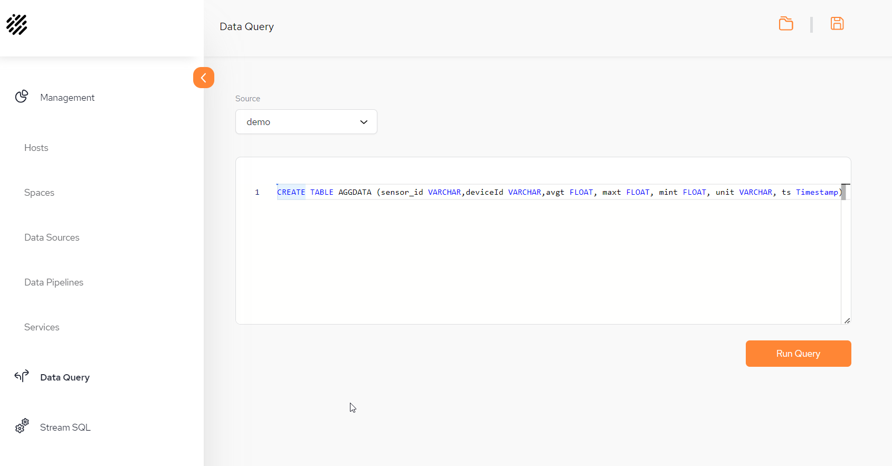
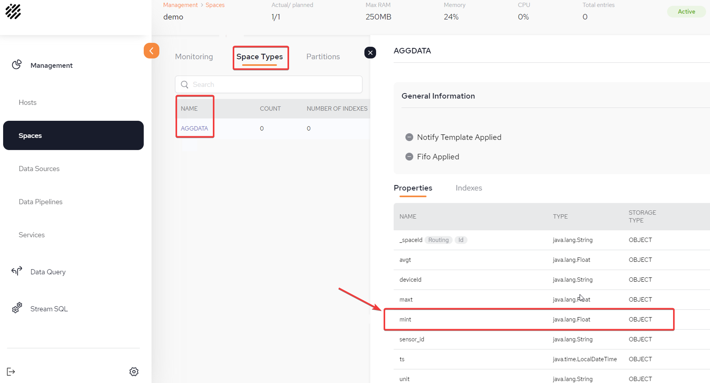
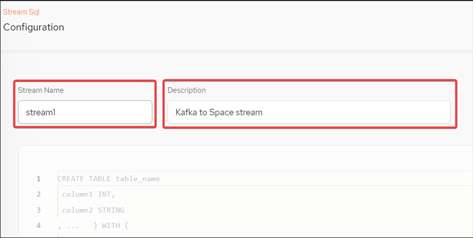
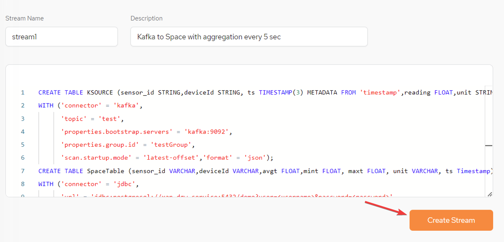
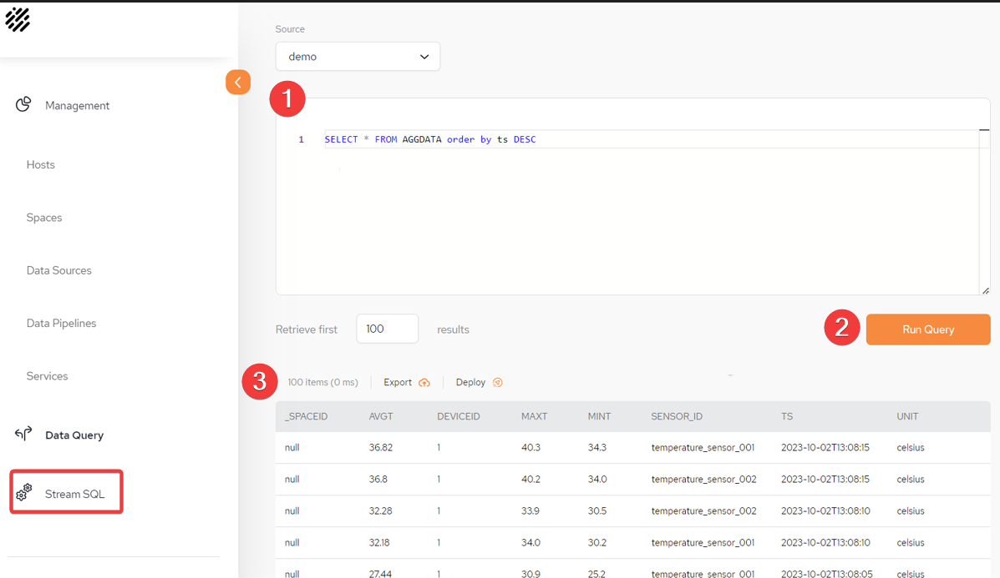
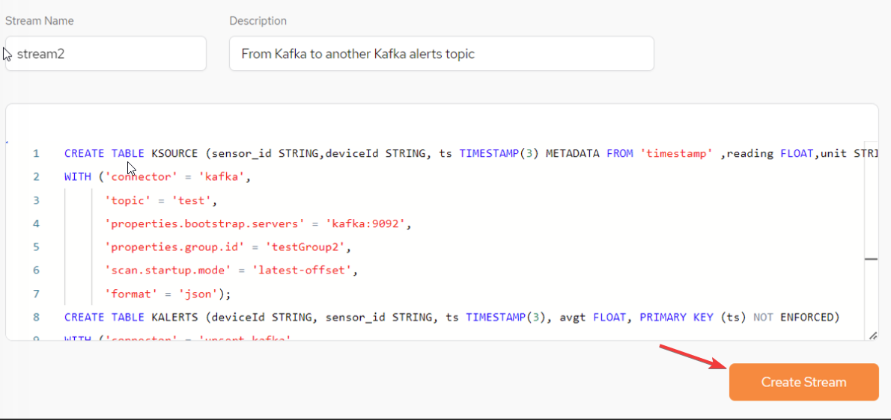

StreamSQL allows to SpaceDeck to implement a low code (SQL) approach to define and operate with ad-hoc data flows, such as read from Kafka and write directly to Space or read from one Kafka topic and write to another Kafka topic.
StreamSQL operations activities can be defined using SQL statements, for example:
Define structure of messages in a Kafka topic as a table - CREATE TABLE.
Define a data flow (stream of data or pipeline) as INSERT AS SELECT statement.
Perform a join of data flow from different Kafka topics using a standard SQL join statement.
For additional information refer to the DI StreamSQL page.
For an StreamSQL overview refer to the streamSQL overview page.
Go to the Data Query menu.
Run the following CREATE TABLE statement:
CREATE TABLE AGGDATA (sensor_id VARCHAR,
deviceId VARCHAR,
avgt FLOAT,
maxt FLOAT,
mint FLOAT,
unit VARCHAR,
ts Timestamp) 
From the Space menu, validate via Space Details - Space Types that the object in the Space has been created correctly - in this example AGGDATA:

From the main Stream SQL menu screen, click Create New Stream + to create a new stream.
Provide the Stream Name and Description:

In the text window of the Stream SQL, create the following SQL queries (7, 8 and 9 below).
All SQL statements should be submitted together with a semicolon delimiter.
Use a CREATE TABLE statement to define the Kafka topic as a table. All properties are defined as columns and Kafka details are also provided:
CREATE TABLE KSOURCE (sensor_id STRING,deviceId STRING, ts TIMESTAMP(3) METADATA FROM 'timestamp',reading FLOAT,unit STRING,WATERMARK FOR ts AS ts - INTERVAL '5' SECOND)
WITH ('connector' = 'kafka',
'topic' = 'test',
'properties.bootstrap.servers' = 'kafka:9092',
'properties.group.id' = 'testGroup',
'scan.startup.mode' = 'latest-offset','format' = 'json'); Use a CREATE TABLE statement to define a Space as a target:
CREATE TABLE SpaceTable (sensor_id VARCHAR,deviceId VARCHAR,avgt FLOAT,mint FLOAT, maxt FLOAT, unit VARCHAR, ts Timestamp)
WITH ('connector' = 'jdbc',
'url' = 'jdbc:postgresql://xap-dgw-service:5432/demo?user=<username>, &password=<password>'
'table-name' = 'AGGDATA'); Make sure that the correct username and password credentials are used to connect to the data gateway.
Use an INSERT SELECT statement to define a continuous flow of events from Kafka to the Space:
insert into SpaceTable (ts,deviceId,sensor_id,avgt,maxt,mint,unit) select TUMBLE_START(ts, INTERVAL '5' SECOND) AS ts,deviceId,sensor_id,avg(reading),max(reading),min(reading),unit
from KSOURCE
group by TUMBLE(ts, INTERVAL '5' SECOND),deviceId,sensor_id,unit; After the statements above have all been written together to the StreamSQL text window, click Create Stream:

From the StreamSQL menu, run an SQL Query to query the aggregation data in the Space. For the example above, run:
SELECT * from AGGDATA order to ts desc 
1 Write the query in the StreamSQL text window.
2 Run the Query.
3 Results of the Query.
In this example, temperature data from sensors is consumed from a Kafka topic. This is aggregated using a standard SQL statement. An alert is raised only if the average temperature is above a certain threshold. An alert is a message that is published to a dedicated alerts topic in Kafka.
From the main StreamSQL menu screen, click Create New Stream + to create a new stream.
In the text window of the StreamSQL, create the following SQL queries.
All SQL statements should be submitted together with a semicolon delimiter.
Use a CREATE TABLE statement to define the Kafka source topic as a source table. All properties are defined as columns and Kafka details are also provided:
CREATE TABLE KSOURCE (sensor_id STRING,deviceId STRING, ts TIMESTAMP(3) METADATA FROM 'timestamp',reading FLOAT,unit STRING,WATERMARK FOR ts AS ts - INTERVAL '1' SECOND)
WITH ('connector' = 'kafka',
'topic' = 'test',
'properties.bootstrap.servers' = 'kafka:9092',
'properties.group.id' = 'testGroup2',
'scan.startup.mode' = 'latest-offset',
'format' = 'json'); Use a CREATE TABLE statement to define a Kafka alerts topics as a target table:
CREATE TABLE KALERTS(deviceId STRING, sensor_id STRING, ts TIMESTAMP(3), avgt FLOAT, PRIMARY KEY (ts) NOT ENFORCED)
WITH ('connector' = 'upsert-kafka',
'topic' = 'sensorsAlertsAvgTemp',
'properties.bootstrap.servers' = 'kafka:9092',
'properties.group.id' = 'testGroup2',
'key.format' = 'json',
'value.format' = 'json'); Use an INSERT SELECT statement to define a continuous flow of events from the Kafka source topic to the Kafka target topic. All events have an average temperature above 36.6:
insert into KALERTS (ts,deviceId,sensor_id,avgt) select TUMBLE_START(ts, INTERVAL '5' SECOND) AS ts,deviceId,sensor_id,avg(reading) as avgt
from KSOURCE
group by TUMBLE(ts, INTERVAL '5' SECOND),deviceId,sensor_id,unit
having avg(reading) > 36.6; After the statements above have all been written together to the StreamSQL text window, click Create Stream:
